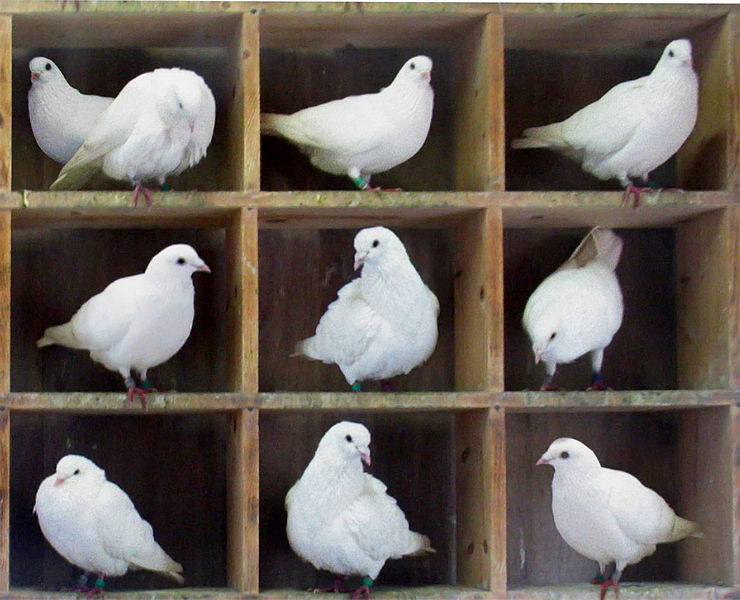

It happens so often - you go to your section of the gym change room, and there is just one other person there, and they are using the locker next to yours and blocking the way. I noticed this a long time ago, and noticed that others noticed it too, referring to Murphy’s law, or “just my luck”, or some such explanation. Why does it happen so often?
I call this the Gym Locker Paradox. It is related to a much more well known paradox, the Birthday Paradox, which is commonly formulated as a puzzle: how many people do you need to have in a room together before the odds are better than even that two share the same birthday?

Obviously in a non-leap year, if there are 366 people you are guaranteed a matching pair (in the worst case there will be one person for every day of the year plus one duplicate). This worst case is generalized as the Pigeonhole Principle - if you have n items shared between m containers, then if n > m at least one container will have more than one item.
The answer to the Birthday Paradox is 23. This is because we care only about any pair matching, not a particular match. There are a large number of possible pairs in this case.
We can calculate the probability more easily by thinking about the probability of no match. For one person this is 1. Add a second person and they for them not to match they must have a birthday on one of the other 364 days, i.e. the probability of them not matching is 364/365. Similarly, for the third person not to match they must be on one of the 363 days left, with probability 363/365.
The total probability for n people is then:
$$P(n) = \frac{365}{365} \times \frac{364}{365} \times \frac{363}{365} \times \ldots \times \frac{(365-n+1)}{365} = \frac{365!}{365^{n} (365-n)!}$$
which falls below 50% at 23 people.
This result - which many people find surprising - is the basis of what are known as Birthday Attacks on cryptographic hash functions used in computer security. Cryptographic hash functions compute some value that is treated as a secure “fingerprint” of a much larger input. For example a digital contract may be “signed” using such a function. An attacker could use the birthday paradox to try to create two versions of a contract with the same fingerprint, one of which is legitimate, then get the legitimate contract approved based on the fingerprint, and finally substitute the fraudulent one. If just the fingerprint is used for verification the fraudulent contract will be accepted. To avoid this kind of attack the number of possible fingerprints needs to be extremely large before the attack becomes impractical.
The math behind the gym locker paradox is much more complex. However, clearly if a locker has multiple neighbors the chance of two people having adjacent lockers is that much higher (consider a version of the birthday problem where we consider a collision to be not just a match but a match within a day or two of each other). Add to that the fact that gym locker selection is not entirely random (people like lockers at eye level rather than lower down, for example), and it is no wonder just a few people can clog up a change room.